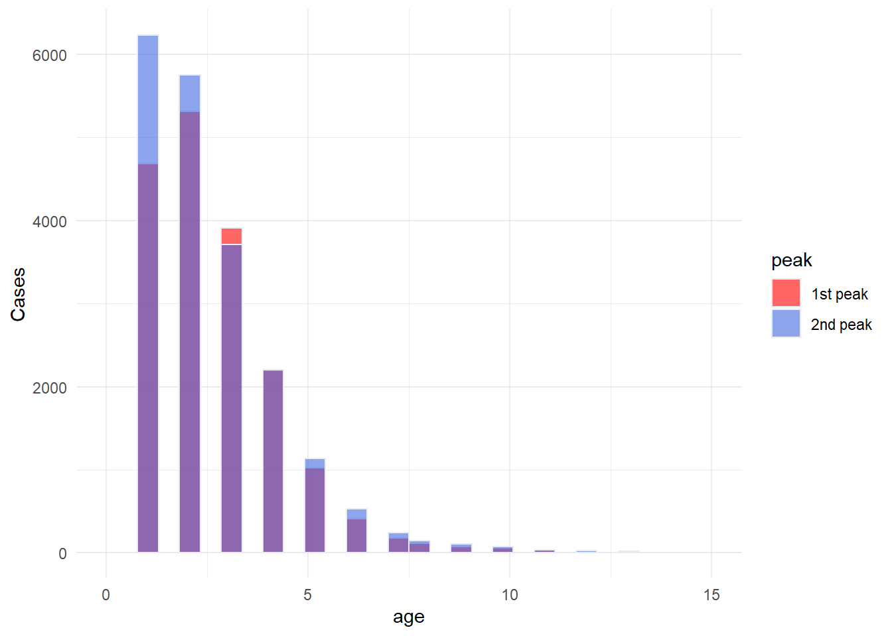

library(readxl)
library(lubridate)
library(ggplot2)
library(cowplot)
library(tidyverse)
library(hrbrthemes)
library(ggsci)
df <- read_excel("D:/OUCRU/hfmd/data/2023_W52_TCM__DANHSACH.xlsx")
colnames(df) <- c("stt", "dob", "sex", "district", "commune",
"inout", "onset_date", "adm_date")
df$dob <- dmy(df$dob)
df$adm_date <- dmy(df$adm_date)
time_step <- "week"
df$adm_time <- as.Date(floor_date(df$adm_date, time_step))
df$age <- trunc((df$dob %--% df$adm_date) / years(1))
agegr_cut <- c(0, 3, 5, 10, 15, Inf)
df$agegr <- cut(df$age, breaks = agegr_cut, right = F)
df$agegr <- factor(df$agegr, labels = c("0-3", "3-5", "5-10", "10-15", "15+"))Age distribution of HFMD
Data
Full first peak age distribution
fi_peak <- df %>%
filter((adm_time < as.Date("2023-09-03")&
!is.na(adm_time) & !is.na(age)))
result_fi <- fi_peak %>%
reframe(
N = n(),
Median = median(age, na.rm = T),
"25th" = quantile(age,na.rm = T,0.25),
"75th" = quantile(age,na.rm = T, 0.75),
min = min(age),
max = max(age),
mean = mean(age),
sd = sd(age)) %>% data.frame()Second peak age distribution
se_peak <- df %>%
filter((adm_time > as.Date("2023-09-03")) &
!is.na(adm_time) & !is.na(age))
result_se <- se_peak %>%
reframe(
N = n(),
Median = median(age, na.rm = T),
"25th" = quantile(age,na.rm = T,0.25),
"75th" = quantile(age,na.rm = T, 0.75),
min = min(age),
max = max(age),
mean = mean(age),
sd = sd(age)) %>% data.frame()Age distribution
data <- data.frame(
peak = c( rep("1st peak",nrow(data.frame(se_peak$age))),
rep("2nd peak",nrow(data.frame(fi_peak$age)))),
age = c( fi_peak$age, se_peak$age )
)
p <- data %>%
ggplot( aes(x=age, fill=peak)) +
geom_histogram( color="#e9ecef", alpha=0.6, position = 'identity') +
scale_fill_manual(values=c("red", "royalblue")) +
theme_minimal() +
xlim(0,15)+
labs(y = "Cases")
colnames(result_fi) <- c("Size","Median","25th","75th",
"min","max","mean","sd")
colnames(result_se) <- c("Size","Median","25th","75th",
"min","max","mean","sd")Plot age distribution of 2 peaks
p
First peak
Size Median 25th 75th min max mean sd
1 22837 2 1 3 0 70 2.471734 2.092084Second peak
Size Median 25th 75th min max mean sd
1 19453 2 1 3 0 53 2.349972 2.273928